Authoring Techniques for Accessible Office Documents: iBooks Author ver2
Authors: Jeroen Baldewijns (Licht en liefde), Steven Breughe (Licht en liefde), Bart Simons (AnySurfer)
Quick Reference
- Usage Notes
- Technique 1. Use Accessible Templates
- Technique 2. Specify the Book's Language
- Technique 3. Provide Text Alternatives for Images and Graphical Objects
- Technique 4. Provide Text Alternatives for Interactive Elements Made with Widgets
- Technique 5: Caption Video
- Technique 6. Use Headings
- Technique 7. Use Styles
- Technique 8. Use Built-In Document Structuring Features
- Technique 9. Create Accessible Tables
- Technique 10. Create Accessible Charts
- Technique 11. Make Content Easier to See
- Technique 12. Make Content Easier to Understand
- Technique 13. Check Accessibility
- Accessibility Help
- References and Resources
- Acknowledgments
Usage Notes
At the time of testing (July 2014), iBooks Author v2 provides a set of accessibility features that is sufficient to enable the production of accessible digital books.
Accessible digital books are those that are usable by a wider range of people with disabilities. While these techniques will be useful when you want to make forms, webpages, applications or other dynamic and/or interactive content, you should also consult the W3C-WAI Web Content Accessibility Guidelines (WCAG 2.0) because these are specifically designed to provide guidance for highly dynamic and/or interactive content.
File Formats
The default file format in which iBooks Author publishes books for the user is Apple’s own iBooks-format (file name ends with ”.ibooks”). These files have a basis that conforms to the ePub-standard, but iBooks Author provides extra features that add elements that are not available in the ePub-standard.
Besides, iBooks Author offers a separate work format that you use for a book in production (before it is published): the file name of such a file ends with ".iba".
Furthermore, iBooks Author offers the possibility to save a book in two other file formats (PDF and TXT). These other file formats are not thoroughly tested for accessibility. In this document we also don’t pay attention to the possibility to export to a PDF-document because you can’t produce a "tagged" PDF with iBooks Author.
Information for Non-Mouse Users
iBooks Author is an application that is meant to be used by designers who can create accessible content. For this reason we assume that users of this application are mouse users (producing an iBook involves quite some "drag-and-drop" with the mouse). Contrary to the other ADOD-documents we don’t offer here specific instructions for non-mouse users.
Disclaimer and Testing Details
Applying these techniques will significantly increase the accessibility of your digital books, but it does not guarantee the accessibility to people with every type of reading disability. For books where you want to be sure about the accessibility, it is recommended to test with end users with reading impairments and also with screen reader users.
The application-specific steps and screenshots in this document were created in July 2014 using iBooks Author (version 2.1.3 (463)) and Mac OS X 10.8.5.
This document is provided for information purposes only and is neither a recommendation nor a guarantee of results. If errors are found, please report them to: info@anysurfer.be.
Technique 1. Use Accessible Templates
When making a new iBook you start from a template. iBooks Author offers 15 templates that all form a solid basis for an accessible book. Those templates contain the complete basic design (page orientation, page layout, fonts, colours, styles, etc.) as well as some content elements (front page, table of contents, glossary, etc.) for your book.
It is important to know that the templates are divided into two groups: "landscape with portrait" and "portrait only". If you use a template from the category "landscape with portrait", then you can read the resulting book on an iPad in landscape orientation as well as in portrait orientation. In that case, the design is optimised for landscape orientation and reading in portrait orientation is secondary. If you use a template from the category "portrait only", then you can read the resulting book on an iPad only in portrait orientation.
Taking into account the readability for partially sighted, this choice is very important. The portrait orientation contains a reading mode that provides a tool bar with which the reader of your book can modify the font size and brightness. The reader can adapt the size of the paragraph text, and iBooks will adapt the line length. Partially sighted users will therefore prefer a book that is optimised for reading in the portrait orientation. This does not mean that a book in the landscape orientation by definition is inaccessible, but it will be less user-friendly for partially sighted users.
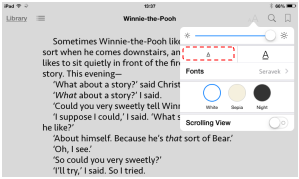 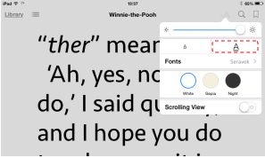
When choosing a template, also pay attention to the colours and contrasts that are used. A template where text often overlaps with images in the background, will be less readable for partially sighted users than a template that visually separates text and images and that offers sufficient contrast between text and background.
To create your own template
You can also make your own templates with iBooks Author. This is only recommended for those who have enough experience with graphic design. Otherwise you risk making an inaccessibly designed template. If you do make templates, make sure to apply all accessibility techniques from this document.
Technique 2. Specify the Book's Language
To allow assistive technologies (such as screen readers) to present the book accurately, it is important to define the natural language of the book. Also when the language of only one paragraph or text fragment differs from the language of the rest of the book, it is useful to indicate this language switch. In this way, the screen reader knows it should adapt the language of the speech synthesizer.
Good to know: if you create a new book, the language for that book is automatically set to the language of your operating system. In other words: if the language of your operating system is set to English, iBooks Author will use English as language setting for each new book.
To change the default language of your book
- Choose the menu-option: View > Show inspector.
- Click the button Document inspector in the inspector:
- Click the Document tab.
- Choose from the Language dropdown menu the desired language for the book:
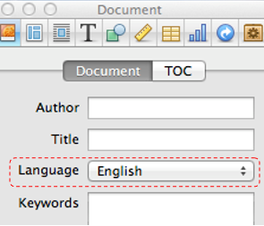
To apply a language directly to selected text
- Select the text for which you want to change the language.
- Choose the menu-option: View > Show inspector.
- Click the button Text inspector in the inspector:

- Click the More tab.
- Choose from the Language dropdown menu the desired language for the selected text:
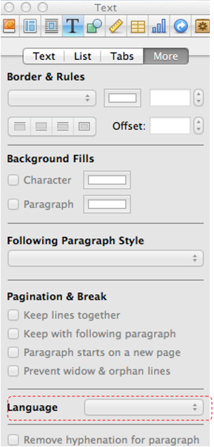
Technique 3. Provide Text Alternatives for Images and Graphical Objects
When using images or other graphical objects, such as charts and graphs, it is important to ensure that the information you intend to convey by the image is also conveyed to people who cannot see the image. This can be accomplished by adding an accessibility description to each image. This accessibility description is not visible for sighted readers of the book, but will be read by a screen reader.
When an image is very complex (i.e. a lot of information is presented visually), you should describe the image’s entire informative message in the accessibility description.
Also, the graphical elements that you create in iBooks Author with the function "Shapes" must be given an accessibility description, if the created shape is meaningful inside the content of your book. If the shape is not meaningful, then you should leave the accessibility description blank. The reader of the book will then not notice the shape at all.
Elements you create in iBooks Author with the function "Text boxes" do not need to be given an accessibility description, since the contents of the text box can be read by the screen reader. If you do add an accessibility description, this results in double information being read by the screen reader, which might confuse the reader.
Tips for writing an accessibility description
- Answer the question: “What information is the image conveying?”.
- If the image does not convey any useful information, leave the accessibility description blank.
- If the image contains meaningful information, ensure all of the text is replicated.
- An accessibility description should be rather short, preferably no more than 40 characters.
- Avoid punctuation in the accessibility description, because the screen reader will speak them too.
- If a longer description is required (e.g. for a graph, a street map, an organisation chart, etc.), make sure the accessibility description contains all information presented visually in the graphical element to the sighted reader of your book.
- Describe in your own words in detail what can be seen in the image (e.g. for an art work stick to a formal description and don’t add your own interpretation.
- A good method to formulate a long description is to imagine you are describing the image to somebody over the phone.
- Test by having others review the book with the images replaced by their accessibility descriptions.
You also could include all information conveyed by images in the text of the book itself. Strictly speaking there is in this case no need for an accessibility description because the image is now purely decorative and the reader doesn’t miss anything when (s)he reads the book. The biggest disadvantage of this method is that you give double information (visual/textual) for people who can read the book visually. That is why we discourage this alternative technique.
To add alternative text to images and graphical objects
- Select the image or the graphical object.
- Choose the menu-option: View > Show inspector.
- Click the button Widget inspector in the Inspector:
- Click the Layout tab.
- In the Accessibility Description field, provide a correct textual description containing the important visually perceivable information:
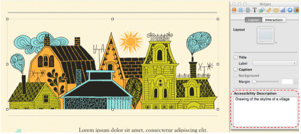
What about the title and the label?
The tab where you enter the accessibility description, also allows to add to each image a title and a label. The title is shown above the image in the book. The label is shown under the image in the book. This is an important difference with the accessibility description, that is visually not shown in the book and so only available as metadata
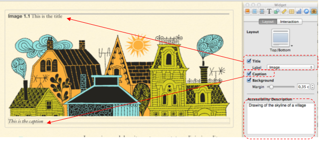
Some more explanation about accessibility on these items:
- You can use a title or a label, they don’t affect the accessibility of the book you are making.
- However, titles and/or labels are not alternatives for the accessibility description.
If you give an image just a title or a label, than it will also be automatically copied in the field for the accessibility description. Verify in this case whether this automatic addition conforms to the tips for writing an accessibility description (above).
Technique 4. Provide text alternatives for interactive elements made with widgets
iBooks Author offers the possibility to add interactive content to a book by the use of "widgets". Using widgets you can make books that are very attractive for training purposes.
The good news is that the use of widgets does not necessarily create accessibility problems for the iBook. You can indeed add an accessibility description to every widget, to ensure its accessibility. For each widget, it is also recommended that you add a title with a label. This label ensures that the screen reader user is informed in detail about the type of interactive image:
- Select the interactive image.
- Choose the menu-option: View > Show inspector.
- Click the button Widget inspector in the inspector:
- Click the Layout tab.
- In the Accessibility Description field, provide a correct textual description that contains literally all visually perceivable information.
- Check the Title checkbox and choose in the Label menu the corresponding label-type. Then type the desired title above the image.
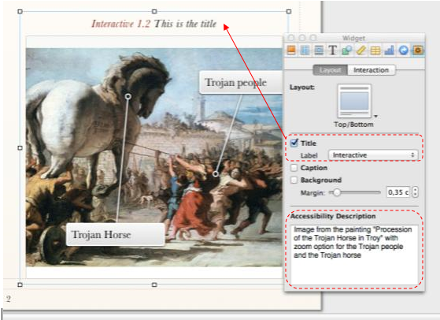
For each type of widget, we add a few notes for accessibility:
- Gallery (picture gallery for the reader of the book to browse through): you can only add one accessibility description for the series of pictures as a whole, so it is recommended to add a separate label to describe each picture.
- Interactive image (image where the reader of the iBook can zoom in on certain parts of that image): provide a meaningful accessibility description, in which you explain about the zones the sighted reader of the iBook can zoom in on.
- 3D (the reader of the book can view the image full screen from all angles): provide an accessibility description and announce in this accessibility description that the image is a 3D image that sighted people can view in 3D.
- Pop-over (image where a window with extra information opens as soon as you click on it): the text in the pop-over window is perfectly readable by screen readers. But a screen reader user is not aware that the image is a pop-over image. Make sure to announce this in the accessibility description.
- Scrolling sidebar (image is embedded in a frame with an extra text description, in which you can scroll): provide an accessibility description, since the accessibility description as well as the extra descriptive text are read by the screen reader
- Review (a test with multiple choice questions that you can insert to verify that the info from the previous chapter was well understood): the test is usable by users of assistive technologies, use descriptions in the accessibility description if the reader must see the picture to be able to answer the question.
Technique 5. Caption Video
iBooks Author also offers a widget to include a video in an iBook. We treat this separately because video has specific requirements to be accessible.
First of all, for video the same principles apply as for other content made with widgets:
- Ensure each video has an accessibility description (see see technique 3) that contains the content/message of the video clip.
- Preferably, also add a title and a label "Movie" to each video, so that it is clear for the reader of your book that a video is available.
It is important that you caption your video clip. This makes the videos more accessible for people with a hearing impairment and on the platforms where iBooks can be read (iOS and Mac OS X), the size, colour and font of the captions are adaptable to the needs of partially sighted end users:

This document will explain the technique of captioning in detail, however, here is a basic workflow to make a captioned video:
- Make sure the video is in the MP4-format (if this is not yet the case, convert it to this format).
- Make a caption file in the SCC-format (Note: the captions should contain no more than 32 characters per line). We found two possible tools to do this:
- A paid solution: MovieCaptioner (14 days free trial): http://www.synchrimedia.com/downloads.html)
- A free solution: make the captions with a free tool (such as Subtitle Horse) in the more common SRT-format and convert them to the SCC-format with the 3playmedia Converter (http://www.3playmedia.com/services-features/tools/captions-format-converter/)
- Link the captions to the MP4-file. This can also be done in two ways:
- A paid solution: Compressorn by Apple
- A free solution: Subler, only for Mac OS X (http://subler.nl.softonic.com/mac):
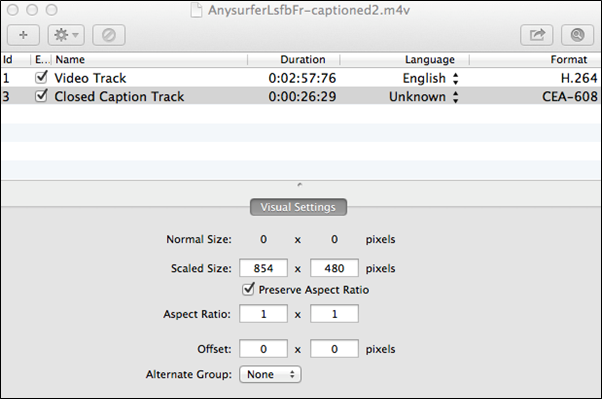
- Import the resulting MP4-file via the widget Media in the iBook.
- Check whether the movie plays in your iBook and shows the captions. For this to work on an iOS-device as well as on a Mac you need to switch on Closed captions and SDH. You find this under Settings > General > Accessibility > Hearing > Subtitles and captioning.
An extensive explanation about captioning video files can be found here: http://www.synchrimedia.com/Get_Started_with_Video_Captioning.zip
Technique 6. Use Headings
All digital books require structuring to make them more straightforward for readers to understand. The most efficient way to do this is to use "true headings", to create logical divisions between subsequent chapters and sections in the book. "True headings" are more than just bolded, enlarged, or centred text; they are structural elements that provide a meaningful sequence to users of assistive technologies.
"True headings" are made by using heading styles. If you use the templates provided by Apple in iBooks Author, they contain already the styles for chapters (first heading level) and sections (second heading level) and all necessary underlying heading levels. You only need to apply them correctly.
Tips for headings
- Use the default headings styles provided ("Heading ", "Heading 2", etc.)
- Nest headings properly (e.g., the sub-headings of a "Heading 1" are "Heading 2", etc.)
- Do not skip heading levels
To define a heading as a chapter or a section
- Choose the menu-option: View > Show styles drawer.
- Select the heading and choose under the paragraph styles the style "Chapter title" for a chapter or "Section title" for a section:
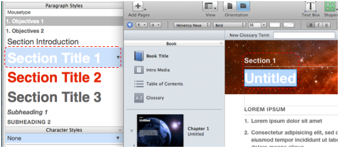 - By double clicking the chapter or section title you could also add a prefix or a number. While strictly speaking this is not necessary for accessibility, it is more user-friendly for the screen reader user:
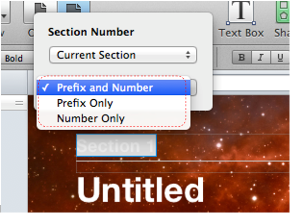
To apply heading styles to headings inside a section
- Choose the menu-option: View > Show style drawer.
- Select the heading(s) you want to link to a heading style and choose the desired heading style under the paragraph styles:
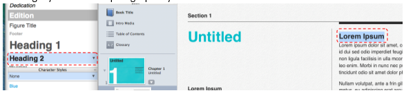
Technique 7. Use Styles
As with heading styles (Technique 6), you should also try to apply consequently the styles that the iBooks Author-templates provides by default. Most templates contain enough pre-authored styles, that you probably don’t feel the need to add your own new styles.
Applying text layout outside the styles should be limited as much as possible. When styles are used correctly, the reader will more easily understand why a piece of text is laid out in an certain way. This is particularly handy when there could be several reasons to apply the same layout. E.g. it is common to use italic to emphasize text, and for Latin terms and given names. Based on the style used, the reader can recognise which of the three cases applies.
Applying styles is done exactly the same way as applying heading styles (see Technique 6). This is for paragraph styles as well as character styles.
Technique 8. Use Built-In Document Structuring Features
8.1. Lists
When you create lists, it is important to format them as "real lists". Otherwise, assistive technologies will interpret your list as a series of short separate paragraphs instead of a structured and coherent list of related items.
To create lists, all templates offer several list styles.
To create an ordered or unordered list
- Select the text block which you want to make a list.
- Choose the menu-option: View > Show style drawer.
- Click the list style you want to apply for the selected text block.
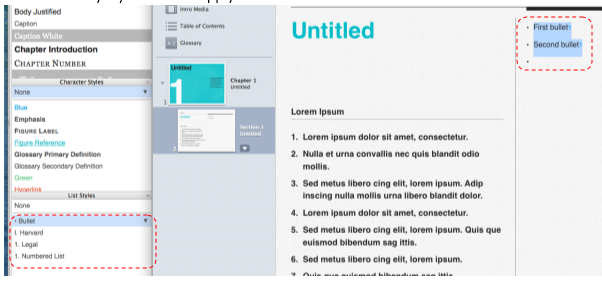
8.2 Table of contents
Each iBook template in iBooks Author automatically generates a table of contents based on the headings used in the book. You don’t need to do anything other than correctly apply the heading styles (seesee Technique 6).
The best way to create a table of contents is to consequently use heading styles, such as Heading 1, Heading 2, etc. (see Technique 6) for all headings that should appear in the table of contents.
Based on these, you can automatically generate a table of contents with the function “Table of contents”.
To define the contents of the table of contents
- Choose the menu-option: View > Show inspector.
- Click the button Document inspector in the inspector:
- Click the TOC tab.
- Click the plus button(+) to add a section to the table of contents. Click the minus button(-) to delete a section from the table of contents.
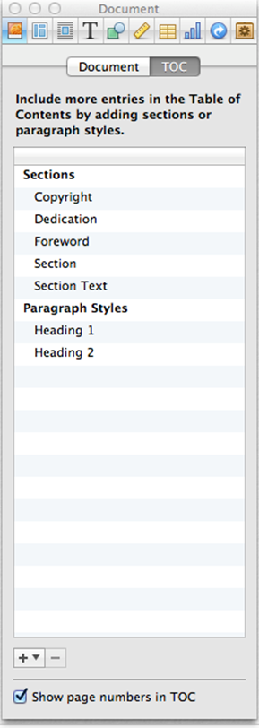
8.3 Glossary
Each iBook template in iBooks Author provides a way to include a glossary. One can add to this list key words that are important inside the book. The glossary gives readers of the book an additional method to search through the contents of the book. Screen readers can also use the glossary to navigate.
To add a glossary
- Click Glossary in the left hand column Book.
- Click the plus-button(+) in the Glossary column and type the word you want to add to the glossary.
- Type in the right hand column the explanation for this word.
- Repeat these steps for each word that you want to add to the glossary:
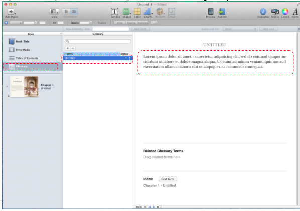
8.4 Page Numbering
An iBook consists of pages, just like a printed book. Page numbers are important because they allow references from the table of contents and because they offer the user of the book an additional way to digitally browse through the book or go directly to a specific page. For the screen reader user as well, the page numbering is an extra way to navigate through a book.
To generate page numbers, you often don’t need to do anything, since page numbering is included in all standard templates of iBooks Author.
8.5 Metadata
You can also add metadata to iBooks, such as the book title and the author of the book. It is essential that you minimally add these metadata correctly, because in the iBooks reading app a screen reader will use these two data to announce books on the book shelf. If you don’t correctly include the title and the author when creating the book, a screen reader will announce on the book shelf in the iBooks reading app this book as “unknown title, unknown author”, and so the screen reader user has no idea which book it is.
To indicate the title and author of a book
- Choose the menu-option: View > Show inspector.
- Click the button Document inspector in the inspector:
- Click the Document tab.
- Fill in the author of the book in the Author field,
- Fill in the title of the book in the Title field:
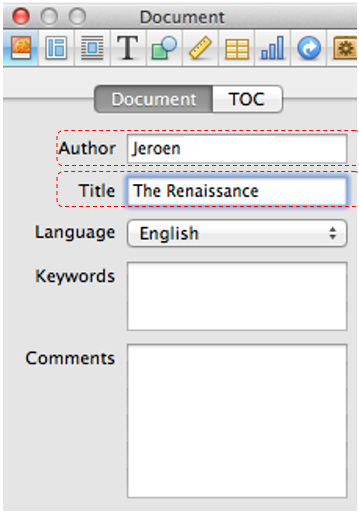
Technique 9. Make Accessible Tables
When including tables in an iBook, it is important that they are clear and appropriately structured. This helps all users to better understand the information in the tables and assures that the screen reader user receives the contextual information (row header, column header) when reading the table contents.
Tips for tables
- Only use tables for tabular information, not for page layout or formatting.
- Use the table function to create tables. Never create tables ”manually” with the tab key or (even worse) the space bar, since assistive technologies will not recognise them as tables.
- Keep tables simple by avoiding merged cells and if possible by dividing complex data sets into separate smaller tables.
- If a table is split over multiple pages, make sure the column headers are repeated at the top of every new page. Make also sure in this case to break the table between rows instead of in the middle of rows.
- Create a text summary of the essential table contents. Any abbreviations used should be explained in the summary.
- When captions or descriptions are provided for tables, they should answer the question: “What is the table’s purpose and how is it organised?”.
- Table cells should be marked as table headers when they serve as labels to help interpret other cells in the table. This also allows the screen reader to link the headers to the data cells.
- Try to limit to just one row and one column with headers.
- Table header cell labels should be concise and clear.
- Ensure the table is not "floating" on the page.
To add a table with headers
- Choose the menu-option: View > Show inspector.
- Click the button Table inspector in the Inspector:

- Click the Table tab.
- Use the buttons under Headers and footer to define how many columns and rows must be used as header:
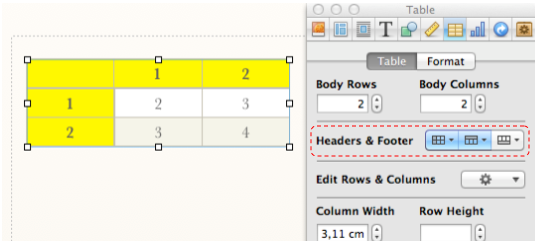
Technique 10. Make Accessible Charts
Charts can be used to make data more understandable for some audiences. However, it is important to ensure that your chart is as accessible as possible to all iBook readers.
All basic accessibility considerations that are applied to the rest of your document must also be applied to your charts and the elements within your charts. For example, use shape and colour, rather than colour alone, to convey information (see Technique 11.3) and use sufficient contrast when creating the charts (see Technique 11.2).
A chart made with the chart function of iBooks Author is by definition a graphical element that the screen reader can’t translate into spoken or braille output. Also the textual information that you add in the Chart Inspector (title, legend, labels, axis indicators, etc.), are embedded into chart and are not readable by the screen reader. It is therefore very important that you provide for the chart an accessibility description (see Technique 3). Bear in mind that the accessibility description must contain all information you want to convey visually with the diagram. You can possibly also add a title and/or label in the Widget inspector. These are also picked up by a screen reader.
More about charts:
- When creating line charts, use the formatting options to create different types of dotted lines to facilitate legibility for users who are colour blind.
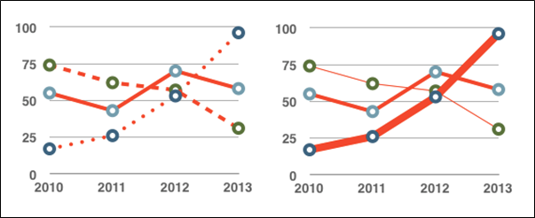 - When creating bar charts, it is helpful to apply textures rather than colours to differentiate the bars.

- Change the default colours for charts as much as possible in colour schemes with good contrasts. In iBooks Author, colour schemes such as "Bright colours" and "Fun" provide good contrast.
- If necessary, change predefined colour schemes, ensuring that they align with sufficient contrast requirements (see Technique 11.2).
Technique 11. Make Content Easier to See
11.1 Format of Text
When formatting text, try to:
- Use font sizes between 12 and 18 points for body text.
- Use fonts of normal weight, rather than bold or light weight fonts. If you do choose to use bold fonts for emphasis, use them sparingly.
- Use standard fonts with clear spacing and easily recognized upper and lower case characters. Sans serif fonts (e.g. Arial, Verdana) may
- sometimes be easier to read than serif fonts (e.g. Times New Roman, Garamond).
- Avoid large amounts of text set all in caps, italic or underlined.
- Use normal (or possibly expanded) character spacing, rather than condensed spacing.
11.2 Use Sufficient Contrast
The visual presentation of text and images of text should have a contrast ratio of at least 4.5:1. To help you determine the contrast, here are some examples on a white background:
- Very good contrast (Foreground=black, Background=white, Ratio=21:1)
- Acceptable contrast (Foreground=#767676, Background=white, Ratio=4.54:1)
- Unacceptable contrast (Foreground=#AAAAAA, Background=white, Ratio=2.32:1)
Also, always use a single solid color for a text background rather than a pattern.
In order to determine whether the colors in your document have sufficient contrast, you can consult an online contrast checker, such as:
- Juicy Studio: Luminosity Color Contrast Ratio Analyzer
- Joe Dolson Color Contrast Comparison
- TPG Contrast Analyser
11.3 Avoid Relying on Colour Alone
Do not rely solely on colours to convey information in a visual way, to indicate an action or to distinguish an object visually. People with a reduced colour perception loose indeed information.
When you want to check whether colour is used in your iBook to convey meaningful information, you can make a screenshot of your page and have it checked by an online tool that converts your screenshot into grayscale. A possible tool for this is:
11.4 Avoid Relying on Sensory Characteristics
If your text contains instructions that help to understand and/or use the information in your iBook, these should not only rely on sensory characteristics, such as colours or shapes. An example to clarify this:
- Never refer to images by just mentioning their shape (e.g. "the biggest…"). An alternative could be to number the images so that you can refer to a specific one.
11.5 Avoid Using Images of Text
Before you use an image to control the presentation of text (e.g., to ensure a certain font or colour combination), consider whether you can achieve the
same result by styling "real text". If this is not possible, as with logos containing stylized text, make sure to provide alternative text for the image
following the techniques noted above.
Technique 12. Make Content Easier to Understand
12.1 Write Clearly
By taking the time to design the content of your iBook in a consistent way, it will be easier to access, navigate and interpret for all users:
- Whenever possible, write clearly with short sentences.
- Introduce acronyms and spell out abbreviations.
- Avoid making the document too "busy" by using lots of whitespace and by avoiding too many different colors, fonts and images.
- If content is repeated on multiple pages within a document or within a set of documents (e.g., headings, footings, etc.), it should occur consistently each time it is repeated.
12.2 Provide Context for Hyperlinks
Hyperlinks are more effective navigation aids when the user understands the likely result of following the link. Otherwise, users may have to use trial-and-error
to find what they need. To help the user understand the result of selecting a hyperlink, ensure that the link makes sense when read in the context of the text around it. E.g. it is not good to use “More information” as link text in the sentence: “More information about the train and bus timetable can be found here”. It is better associate the link to the text “train and bus timetable”.
Technique 13. Check Accessibility
Note: At the time of testing (July 2014) iBooks Author does not offer its own function to check a book for potential accessibility problems, before publishing it. It is also not possible to export a book from iBooks Author as an HTML-page, which makes it impossible to check the accessibility on the basis of an exported HTML-version.
To get an idea of the accessibility of your book, you can create a preview (the Preview button can be found in the iBooks Author tool bar) of the book on an iPad. Try to read this test book completely using the in iOS built-in accessibility features:
- the VoiceOver screen reader,
- the zoom function,
- inverted colours,
- captions for video, etc.
Try to imagine yourself in the functional impairment of the blind, partially sighted, deaf or hearing impaired reader of your book. You could for instance wear eye shades or switch off the sound of your iPad.
For other document types, it is often recommended to convert them into a "tagged" PDF-file. Then you can have this file automatically checked by Acrobat Reader for accessibility problems. iBooks Author unfortunately does not offer the possibility to produce a tagged PDF. A PDF-document without tagging is by definition not accessible and therefore not relevant to check the accessibility of your iBook.
Accessibility Help
More information about the accessibility features provided by iBooks Author to be more usable for disabled users, can be found in the help function of iBooks Author:
- Open the menu: Help.
- Type a search term in the Search box.
References and Resources
- iBooks Author Help
- GAWDS Writing Better Alt Text [http://www.gawds.org/show.php?contentid=28]
- Publishing with iBooks Author, An Introduction to Creating Ebooks for the iPad, Nellie McKesson & Adam Witwer, O’Reilly, February 2012
- iBooks Accessibility, Luis F. Pérez, M. Ed.
Acknowledgments
Authors: Jeroen Baldewijns (Licht en liefde), Steven Breughe (Licht en liefde), Bart Simons (AnySurfer), Jan Richards (Editor, Inclusive Design Research Centre)
This document was produced as part of the Accessible Digital Office Document (ADOD) Project. This project has been developed by the Inclusive Design Research Centre, OCAD University as part of an EnAbling Change Partnership project with the Government of Ontario and UNESCO (United Nations Educational, Scientific and Cultural Organization).
Substantial contributions have also been made to the project by AnySurfer, Licht en liefde, the City of Toronto, and OCAD University.

Accessible Digital Office Documents (ADOD) Project by Inclusive Design Research Centre (IDRC) is licensed under a Creative Commons Attribution-ShareAlike 3.0 Unported License.
Updated: 19 Aug 2013